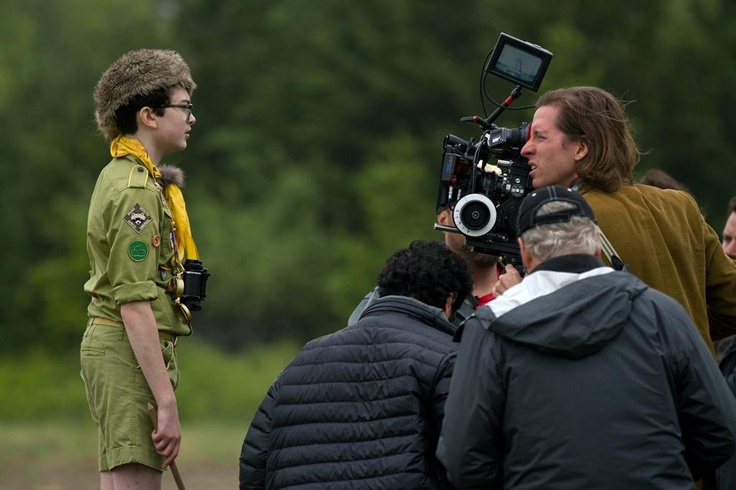

Збережіть цей шедевр
Додайте фільм до особистого списку або знайдіть наступну історію під свій настрій.
Захоплива історія про розумного та хитрого Містера Лиса, який не може втриматися від своєї дикої натури. Провернувши серію зухвалих пограбувань ферм трьох жадібних багатіїв, він змушений об'єднати всіх лісових звірів, щоб захистити свої родини від розлючених фермерів.

Перший анімаційний шедевр Веса Андерсона, створений у техніці лялькової стоп-моушн анімації за мотивами дитячої повісті Роальда Дала.

Містер Лис колись був найкращим викрадачем курей, але пообіцяв дружині зав'язати після того, як вони ледь не попалися. Тепер він працює журналістом і живе у норі під великим дубом, проте спокуса проявити хижацьку природу перемагає. Він здійснює таємні нічні рейди на ферми трьох жорстоких фермерів — Боггіса, Банса та Біна.
Оскаженілі фермери об'єднують зусилля, щоб оточити та знищити Лиса та його родину за допомогою важкої техніки. Опинившись глибоко під землею без їжі та води разом з іншими лісовими мешканцями, містер Лис розробляє геніальний план підземних тунелів, щоб переиграти супротивників і зберегти дику свободу.
Вес Андерсон був палким шанувальником творчості Роальда Дала з дитинства і навіть писав сценарій, живучи в маєтку письменника в Англії. Анімацію створювали на студії в Лондоні: ляльки виготовляли вручну з використанням справжньої вовни та хутра. Замість студійного запису озвучки Андерсон вивіз акторів на природу, ферми й у ліси, щоб досягти природного звучання голосів.
Містера Лиса озвучив харизматичний Джордж Клуні, а його виважену дружину Місіс Лис — Мерил Стріп. У знімальній команді озвучування також взяли участь постійні актори Андерсона: Джейсон Шварцман (синочок Еш), Білл Мюррей (Борсук), Оуен Уілсон (тренер Скіп), а також Віллем Дефо та сам режисер у ролі Ласки.
Фільм витримано в теплій осінній колірній гамі: помаранчевий, бурштиновий, гірчично-жовтий і темно-теракотовий кольори створюють атмосферу затишного англійського передмістя. Навіть синій колір майже повністю виключений із кадру на вимогу режисера, щоб зберегти цілісність осіннього тепла.
Цитата з діалогу
«Усе-таки ми дикі тварини, правда? Зі своїми звичками та дикою природою у венах.»
— Містер Лис, «Фантастичний містер Лис»
| Рік | 2009 |
|---|---|
| Жанр | Анімація / Пригоди / Комедія |
| Хронометраж | 87 хв |
| Мова | Англійська |
Витончена ручна лялькова робота, теплі осінні барви та неймовірна симетрія


Повна палітра з 10 відтінків. Натисніть на плашку, щоб скопіювати HEX-код
Додайте фільм до особистого списку або знайдіть наступну історію під свій настрій.
Пройдіть короткий квіз і ми підберемо стрічку, яка ідеально пасуватиме вашому стану.
КвізФільми з ляльковою анімацією, привносячи затишну атмосферу та нестримну свободу

Хлопчик відправляється на сміттєвий острів, щоб урятувати свого вірного пса Спотса.

Втеча двох підлітків на острів. Колір тут працює як компас.